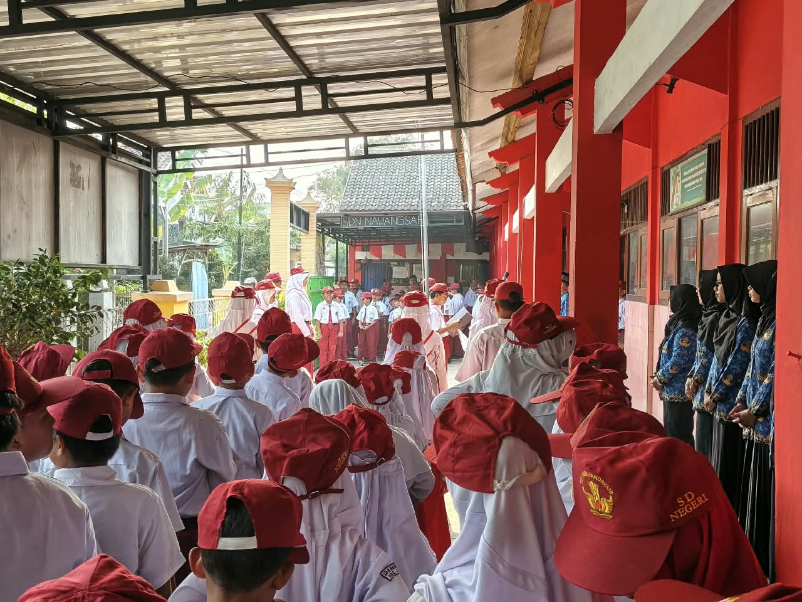
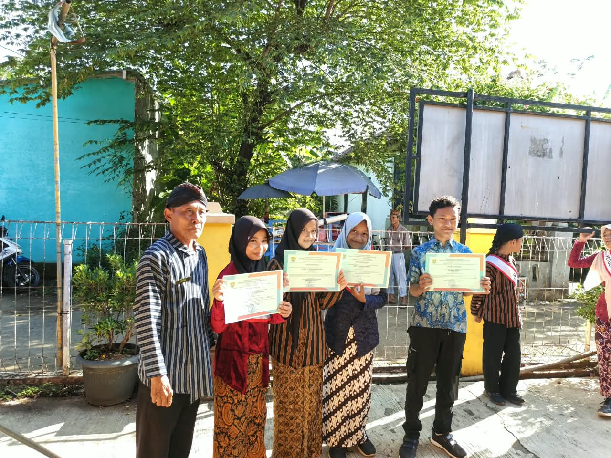
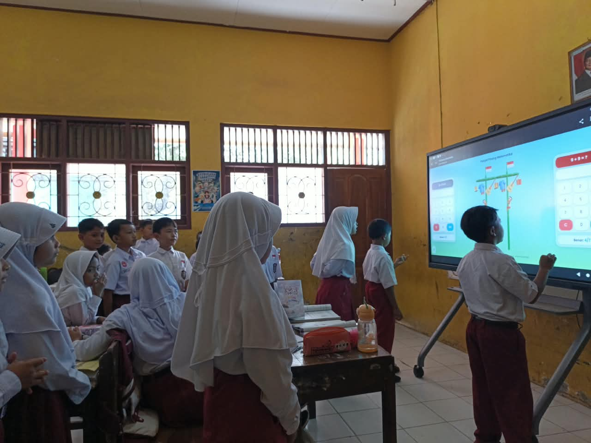

Latihan Soal
Berlatih soal pilihan ganda dan periksa hasil latihan secara langsung.
Buka latihan →Selamat datang di Portal Pembelajaran SD Negeri Nawangsari. Temukan materi, latihan soal, dan aktivitas belajar yang menyenangkan untuk membantu kalian tumbuh menjadi anak yang cerdas, mandiri, kreatif, dan berbudi pekerti.
Pilih kelas untuk menemukan materi dan latihan yang sesuai dengan kegiatan belajarmu.
Menuju hari pelaksanaan sumatif akhir semester 1
Informasi resmi yang diperbarui langsung dari pihak sekolah.
Kumpulan fitur digital yang dikembangkan untuk mendukung belajar siswa.
Berlatih soal pilihan ganda dan periksa hasil latihan secara langsung.
Buka latihan →Lembar Kerja Peserta Didik interaktif berbasis isian & tugas mandiri.
Buka LKPD →Uji pemahaman melalui kuis edukatif yang seru dan menantang.
Masuk arena kuis →Simulasi Tes Kompetensi Akademik bergaya asesmen nasional untuk siswa.
Mulai Simulasi →Unduh berkas administrasi, formulir sekolah, dan dokumen pendukung pembelajaran.
Buka Unduhan →Cari arti kosakata, istilah pelajaran, dan sinonim untuk jenjang SD Kelas 1–6.
Buka Kamus ↗Konversi satuan: Panjang, Masa, Berat, Waktu, Luas, Kecepatan, Suhu.
Buka Aplikasi ↗Belajar Geometri/Bangun Ruang Lengkap dengan rumus dan latihan soal.
Buka Aplikasi ↗Cari arti kosakata, istilah pelajaran bahasa inggris.
Buka Aplikasi ↗Untuk semua kelas.
Buka Aplikasi ↗Untuk kelas 1 dan 2.
Buka Aplikasi ↗Untuk semua kelas
Buka Aplikasi ↗Untuk kelas 4, 5, 6
Buka Aplikasi ↗Sekolah sebagai tempat tumbuh, belajar, berkarya, dan membangun karakter. Melalui portal ini, siswa diharapkan dapat mengakses sumber belajar dengan lebih mudah serta mengembangkan kebiasaan belajar mandiri.
Portal ini dirancang untuk mendukung pembelajaran di sekolah maupun di rumah, dengan tetap mengutamakan nilai karakter, kemandirian, dan semangat berprestasi.
✨ Keterbatasan ruang bermain fisik tidak menyurutkan langkah kita. Selamat datang di dunia digital SD Negeri Nawangsari tempat di mana setiap layar adalah halaman bermain baru untuk menimba ilmu dan mengukir prestasi!.
Sebuah ruang tanpa batas yang tidak membutuhkan sejengkal pun tanah tambahan, namun mampu menampung jutaan ilmu pengetahuan. Di ruang virtual ini, halaman yang sempit berubah menjadi galaksi luas tempat siswa bisa menjelajahi tata surya.
✨ Dari keyakinan itulah lahir sebuah gagasan besar: menghadirkan Ruang Virtual SD Negeri Nawangsari.
Lihat informasi sekolahSD Negeri Nawangsari berkomitmen penuh dalam mewujudkan lingkungan pendidikan yang bersih, transparan, akuntabel, serta memberikan pelayanan terbaik bebas dari korupsi dan gratifikasi.
Mari membangun lingkungan belajar yang bersih, sehat, mandiri, dan inovatif.
Informasi lengkap mengenai alamat, visi misi, tujuan, hingga dewan guru SD Negeri Nawangsari.
Jl. Gunung Muria RT 18 RW 03, Desa Nawangsari, Kecamatan Weleri, Kabupaten Kendal, Provinsi Jawa Tengah, Kode Pos 51355.
📧 Email: sdnnawangsari@yahoo.co.id
“TERWUJUDNYA SISWA YANG UNGGUL DALAM PRESTASI, MANDIRI, DAN TINGGI BUDI PEKERTI.”
Statistik sebaran siswa Laki-laki (L) & Perempuan (P)
Ketik nama siswa atau NISN untuk mengecek status kelas secara real-time.
Ketik nama lengkap atau NISN alumni untuk mencari data kelulusan secara real-time.
Sampaikan pertanyaan, masukan, atau saran Anda untuk kemajuan SD Negeri Nawangsari.
Dokumentasi momen seru, prestasi, dan kegiatan positif siswa SD Negeri Nawangsari.

Kegiatan Upacara Bendera
Pembiasaan kedisiplinan dan rasa nasionalisme siswa setiap hari Senin.

Prestasi & Pameran Karya
Menampilkan hasil kreativitas seni dan prestasi anak-anak.

Pembelajaran Digital
Siswa antusias mengakses portal dan kuis interaktif di kelas.
Pintasan resmi menuju platform pembelajaran, pendataan, dan referensi pendidikan.